第18天：活跃变量分析
第18天：活跃变量分析
还记得上节课的内容吗？
1 | |
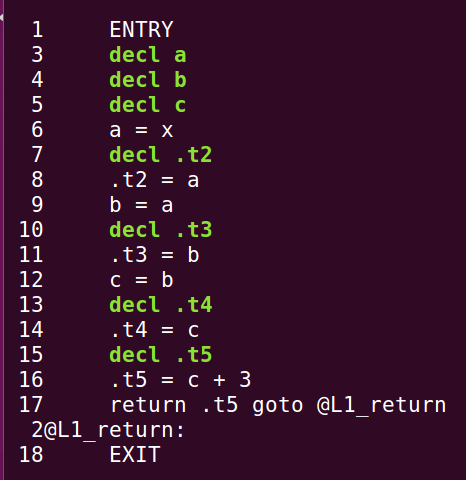
↑图 1
代码片段 1 生成的中间代码如图1。经过复写传播优化后，中间代码变成下图（图2）的样子：
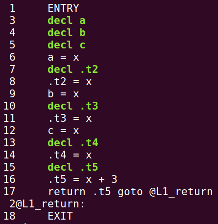
↑图 2
咱们仔细看看这段代码，指令 6 是 a = x;
当把 x 的值给变量 a 后，后面就没有使用过 a;可以说“a = x”这个赋值没有什么用。
同理，指令 8、9、11、14 也没有什么用。
以上是人工识别出指令多余，如何用代码实现呢？
活跃变量分析就是干这个的，经过活跃变量分析后，会发现图 2 中指令 3-14 都是多余的，删除多余的指令后，最终生成代码如图 3：
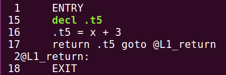
↑图 3
活跃是什么意思
有读者问“活跃变量”中的“活跃”怎么理解？
它的定义是这样的：
对于变量 x 和程序点 p，如果在流图中沿着从 p 开始的某条路径会引用变量 x 在 p 点的值，则称变量 x 在点 p 是活跃（live）的，否则称变量 x 在点 p 是不活跃（dead）的。
我们举个例子：
1 | |
第 1 行的末尾就是程序点 p;我们检查从点 p 出发的两条路径：
(1)路径 A，当 if 条件为真的时候，执行 5~6 行。
当执行到第 5 行的时候，读取了变量 x的值，这个值正是在程序点p（第1行）所赋值的 10，所以在路径 A，引用了变量 x 在 p 点的值。
（2）路径 B，当 if 条件为假的时候，执行第 9 行。并没有使用 x 的值 10，而是重新给 x 赋值为 30
前面的定义说“沿着从 p 开始的某条路径会引用变量 x 在 p 点的值”。
虽然路径 B 没有引用变量 x 在 p 点的值，但是路径 A 引用了，所以变量 x在程序点 p是活跃的。
这个结论的意义在于：编译器在点 p之后不能立即释放或覆盖存储 x的值（即 10）的寄存器或内存位置，因为路径 A 需要这个值。
作为对比，我们再看一个例子：
1 | |
从点 p出发的所有路径上，x在点 p的值 (10) 都没有被使用的机会（因为它在第 2 行被立即覆盖了）。因此，变量 x在程序点 p是不活跃的。所以，第 1 行的 x = 10; 是死代码，可以删除。
数据流分析框架
理解了什么是“活跃”和“不活跃”后，我们看看活跃变量数据流分析框架。
1、数据流方向：逆向。因为判断一个变量是否活跃看的是它在将来会不会被使用，所以是逆向。
2、值集：活跃变量分析的是所有可见变量，包括全局变量、函数的形参变量和函数内定义的局部变量，这和常量传播分析的变量是相似的。边界集合 Exit 块的 in 值为空集，其他块的 in 值也是空集。
3、交汇运算：当基本块有多个后继的时候，基本块的 out 值是多个后继 in 值的并集。
4、传递函数：s.in = (s.out - s.def) ∪ s.use
下面我们举例说明活跃变量的数据流分析。
1 | |
我们的编译器针对上面的代码，生成的中间代码如下：
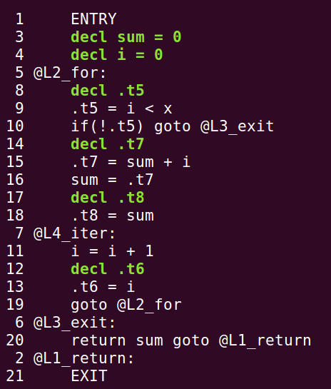
首先，我们要统计代码中的变量，因为示例中没有全局变量，只需要统计函数的形参变量和函数内定义的局部变量。
不难看出，变量有
1 | |
前面学习复写传播的时候，我们为每条指令都设置了 gen 集合和 kill 集合。类似地，在活跃变量分析中，我们要为每条指令设置好 use 集合和 def 集合。
use 表示变量的使用先于定值；def 表示变量的定值先于使用。
例如指令 9， “.t5 = i < x;”
它使用了变量 i 和 x，且对 .t5 定值。
所以，指令 9 的 s.def = {.t5}; s.use = {i, x};
再比如指令 11， i = i + 1;
这条指令既使用了 i，也定值了 i，但是对 i 的使用在先，所以指令 11 的 s.use = {i}; s.def 是空集
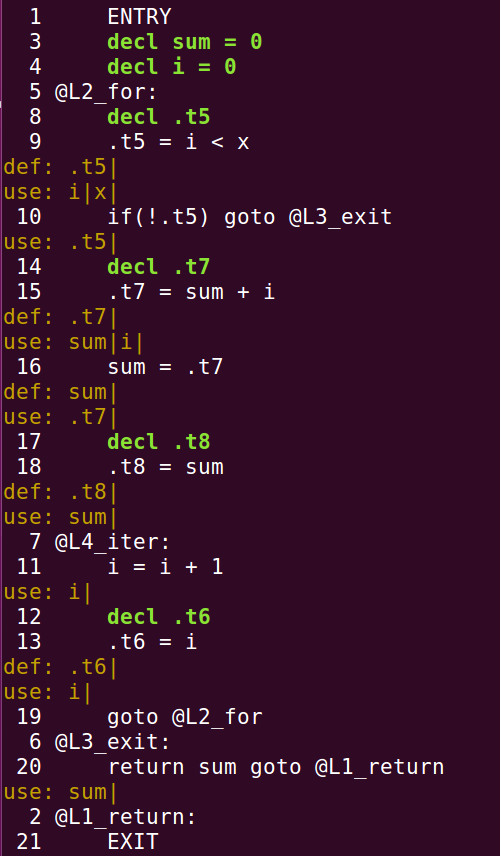
如图所示，我已经把每条指令的 def 和 use 集合写在指令的下方了（黄颜色字体）。对于没有列出来的，表示集合为空，例如指令 5，def 和 use 集合都为空；指令 11，def 是空集。竖线仅仅是为了分隔变量，看起来清晰一些。
现在我们根据数据流分析框架做活跃变量的分析。
因为代码中有跳转和循环，所以还需要画出它的流图。
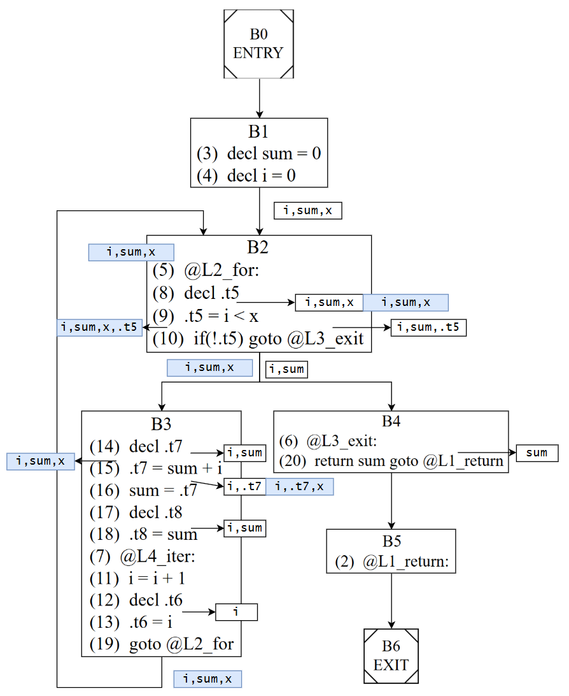
上图就是流图。先不用看标注，只需要大致观察 B0~B6 这 7 个基本块。
下面我们用工作表法（worklist）手动分析数据流。
开始的时候，把除B6（EXIT）的基本块逆序加入工作表。
如果用队列表示，从队列头到尾巴是这样的：
B5，B4，B3，B2，B1，B0
只要队列不是空，我们就从队列头摘下一个基本块，处理它。
为了叙述方便，我们用 inst_xx.yy 表示 xx 指令的 yy 集合。
B5
首先处理 B5.
队列变成 B4，B3，B2，B1，B0
B5.out 来自 B6.in，因为 B6.in 的初始值是空集，所以 B5.out = Ø
B5 里面就一条指令：指令 2
inst_2.out = B5.out = Ø
因为指令 2 的 use 和 def 集合都是空集，根据传递函数：s.in = (s.out - s.def) ∪ s.use
inst_2.in = Ø - Ø ∪ Ø = Ø
B5.in = inst_2.in = Ø
这样对 B5 的处理就完成了，因为每个基本块的 in 集合的初始值是空集，当前 B5.in 也是空集，和初始值一样，所以不用把它的前驱加入队列。
B4
我们再从队列头摘下一个基本块，是 B4；
队列变成 B3，B2，B1，B0
B4.out = B5.in = Ø
B4 块里面最后一条指令是指令 20
inst_20.out = B4.out = Ø
因为 inst_20.use = {sum}; inst_20.def = Ø
所以 inst_20.in = Ø - Ø ∪ {sum} = {sum} (如图 B4 块，我在指令 20 的 in 位置标注了 sum)
然后处理指令 6
inst_6.out = inst_20.in = {sum};
inst_6.in = {sum} - Ø ∪ Ø = {sum};
因为指令 6 是基本块 B4 的第一个指令，所以 B4.in = inst_6.in = {sum};
因为 B4.in 的初始值为空集，现在是 {sum}，不一样了，所以要把它的前驱 B2 加入队列。发现 B2 已经在队列中，就不需要重复加入了。
B3
我们再从队列头摘下一个基本块，是 B3；
队列变成 B2，B1，B0
B3.out = B2.in = Ø （因为所有基本块的初始值 in 是空集）
inst_19.out = B3.out = Ø
inst_19.in = Ø - Ø ∪ Ø = Ø
inst_13.out = inst_19.in = Ø
因为 inst_13.def = {.t6}; inst_13.use = {i}
inst_13.in = Ø - {.t6} ∪ {i} = {i}
inst_12.in = {i}
inst_11.out = inst_12.in = {i}; inst_11.use = {i}; inst_11.def = Ø
inst_11.in = {i} - Ø ∪ {i} = {i}
后面我就不一个一个算了，仅列出重要的：
inst_18.in = {i, sum}
inst_16.in = {i, sum} - {sum} ∪ {.t7} = {i, .t7}
inst_15.in = {i, .t7} - {.t7} ∪ {sum, i} = {i, sum}
inst_14.in = inst_15.in = {i, sum}
需要注意的地方到了，B3.in = inst_14.in = {i, sum}
B3.in 的值也发生了变化，所以要把它的前驱 B2 加入队列。发现 B2已经在队列中，就不需要重复加入了。
B2
我们再从队列头摘下一个基本块，是 B2；
队列变成 B1，B0
因为 B2 的后继是 B3 和 B4，
B2.out = B3.in ∪ B4.in = {i，sum} ∪ {sum} = {i，sum}
inst_10.out = B2.out = {i，sum}
inst_10.in = inst_10.out ∪{.t5} = {i，sum，.t5}
inst_9.in = {i，sum，.t5} - {.t5} ∪ {x, i} = {i，sum，x}
B2.in = inst_5.in = inst_9.in = {i，sum，x}
B2.in 的值也发生了变化，所以要把它的前驱 B1 和 B3 加入队列。发现 B1 已经在队列中，就不需要重复加入了，但是 B3 不在队列中，需要加入。
这时候队列变成： B1，B0，B3
B1
我们再从队列头摘下一个基本块，是 B1；
这时候队列变成： B0，B3
B1.out = B2.in = {i，sum，x} = B1.in
B1.in 的值也发生了变化，所以要把它的前驱 B0 加入队列。发现 B0 已经在队列中，就不需要重复加入了。
B0
我们再从队列头摘下一个基本块，是 B0；
这时候队列变成：B3
B0.out = B1.in = {i，sum，x} = B0.in
虽然 B0.in 的值发生了变化，但是 B0 是入口，没有前驱，所以 B0 也处理完了。
B3
再从队列头摘下一个基本块，是 B3；
此时队列为空。
B3.out = B2.in ={i，sum，x}
经过指令 19，13，12，…，到了指令 16 的 in,
inst_16.in = {i, .t7, x}（蓝色标注）
inst_15.in ={i, sum, x}
B3.in = inst_15.in ={i, sum, x}
注意，上一次计算 B3 的时候，B3.in ={i, sum}
所以，要把 B3 的前驱 B2 加入队列。
此时，队列里面仅有 B2；
B2
从队列中拿出基本块，B2
B2.out = B3.in ∪ B4.in = {i，sum，x} ∪ {sum} = {i，sum，x}
inst_10.out = B2.out = {i，sum，x}
inst_10.in = inst_10.out ∪ {.t5} = {i, sum, x, .t5}
inst_9.in = {i, sum, x, .t5} - {.t5} ∪ {x, i} = {i, sum, x}
B2.in = inst_9.in = {i, sum, x}
上一次 B2.in = {i, sum, x},看来值没有改变，所以不需要再把 B2 的前驱加入队列。
此时队列为空。数据流分析到达了不动点。
找出死代码
到达了不动点后，我们关注指令的 out 集合。
根据 s.in = (s.out - s.def) ∪ s.use
也就是说如果某个变量被使用，它就会向前面的语句传递，一直传递到它被定值的地方。
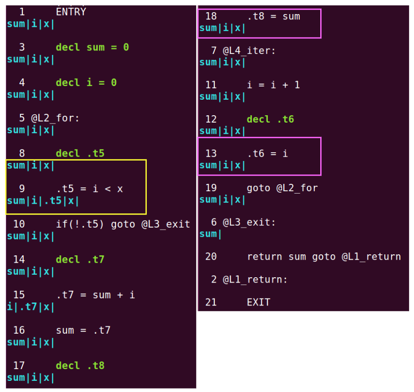
上图是到达不定点后，每个指令的 out 集合，对于有单一后继的指令，它的 out 值也是它后继指令的 in 值。
先看黄色框，指令 9 的 in 集合是 {sum, i, x}， out 集合是 {sum, i, .t5, x}
我们不能根据 in 集合来优化，因为 .t5 明显是有用的，但是它不在 in 集合中，而在 out 集合中；
再看指令 18， .t8 没有用，它不在指令 18 的 out 集合中；同理，指令 13，.t6 没有用，它不在指令 13 的 out 集合中。
所以一个指令的 out 集合，反映出这条指令后面会使用的变量。如果这条指令的左值不在 out 集合里面，说明它往后没有用，这条代码就是死代码。
代码讲解
原理就说这么多，下面该说代码了。
live_var_t
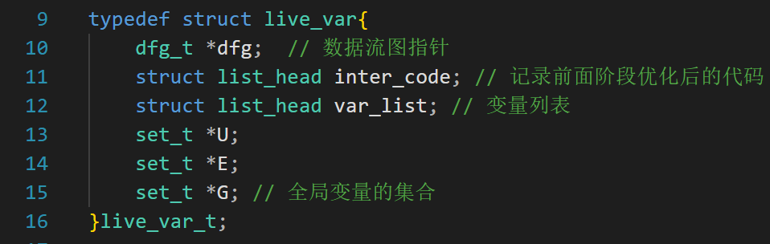
这是 live_var_t 结构体，和之前的复写传播的 copy_prpgt_info_t 很像。可以对比一下。
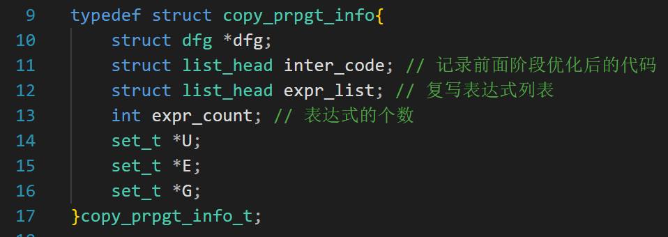
初始化
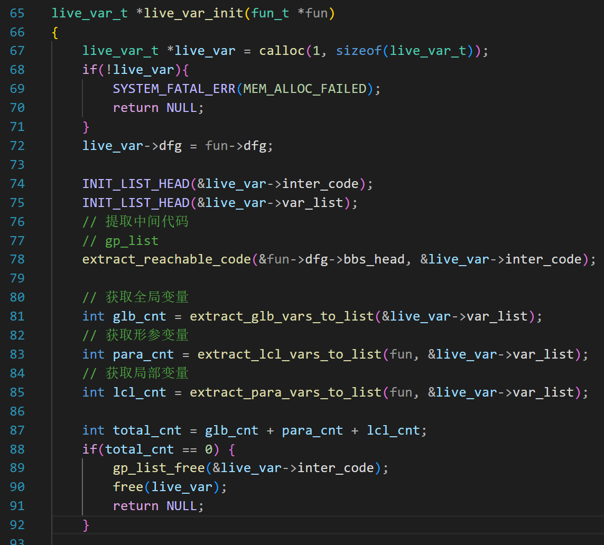
第 67 行，分配内存；第 72 行，让 live_var_t 的 dfg 指针指向函数的流图；
74~75 完成链表的初始化；第 78 行提取中间代码。
第 81~85 是统计各种变量。代码比较简单，不赘述。
第 88 行，处理特殊情况，如果三种变量的个数加起来是 0，那也不用做活跃变量分析了。
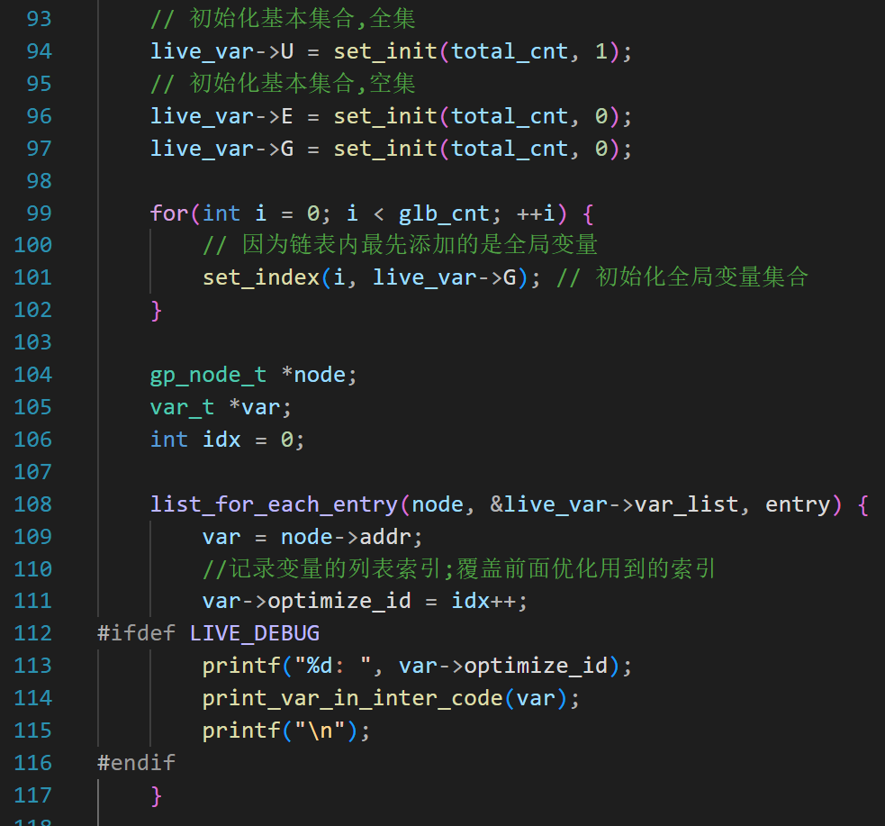
第 94~97，初始化三个集合，分别是全集，空集和 G，G 表示全局变量的集合。
第 99 ~102，设置 G 的 bit 0 到 bit(glb_cnt - 1) 为 1，这是因为全局变量最先统计，其索引对应 0 ~ (glb_cnt - 1)
第 108 行，遍历链表 var_list，所有变量的地址都收集到了这个链表中。需要为变量分配索引，这个索引指示它们在集合中占用第几个比特位。
前面做常量传播的时候，也用到了 optimize_id 这个字段。一旦常量传播及有关的优化做完，这些变量就没有用了。所以这里依然用这个字段做变量活跃性分析。
第 112~116，打印索引和变量的名字，用于调试。
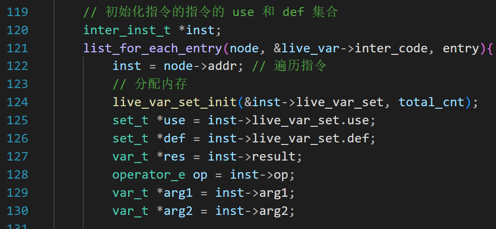
活跃变量的分析涉及到 4 个集合，分别是 in、out、use、def
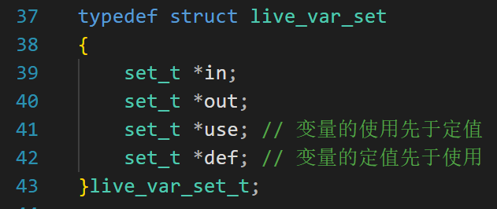
第 121 行，遍历指令，第 124 行，为指令的集合分配内存，并且把集合都设置为空集。
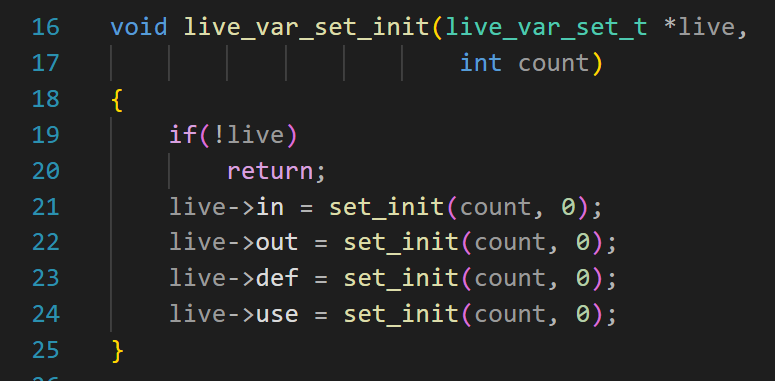
接下来是根据指令的操作码，设置每个指令的 use 和 def 集合。
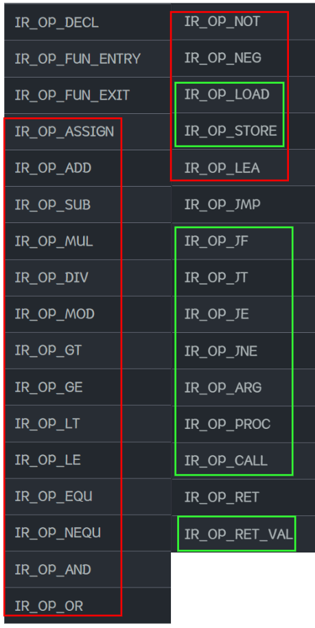
我们先处理红框里面的指令（排除掉 IR_OP_LOAD 和 IR_OP_STORE），绿色的后面再处理。
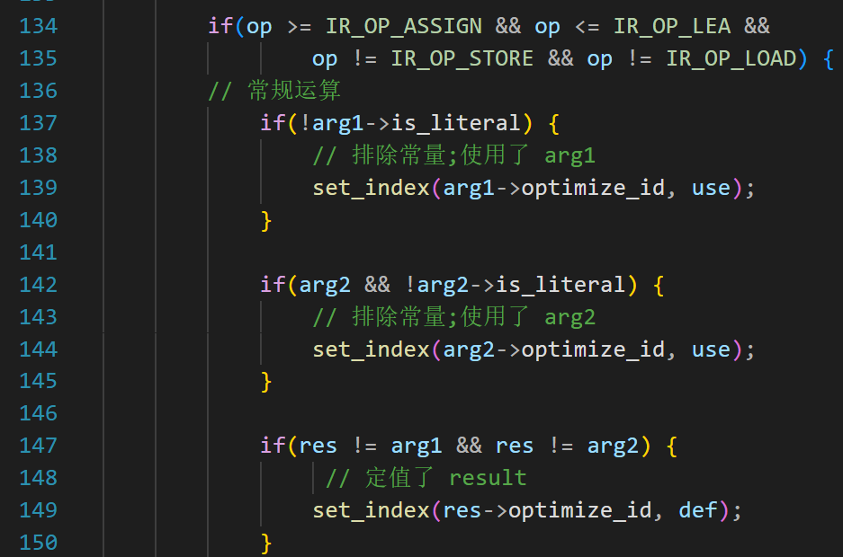
137~140，如果使用了变量 arg1, 则把 arg1 的索引加入 use 集合；
142~145，如果使用了变量 arg2, 则把 arg2 的索引加入 use 集合；
第 147 设置 def 集合为 res 的索引。但是要排除掉 a = a + 2; b = 3 * b 这样的指令。
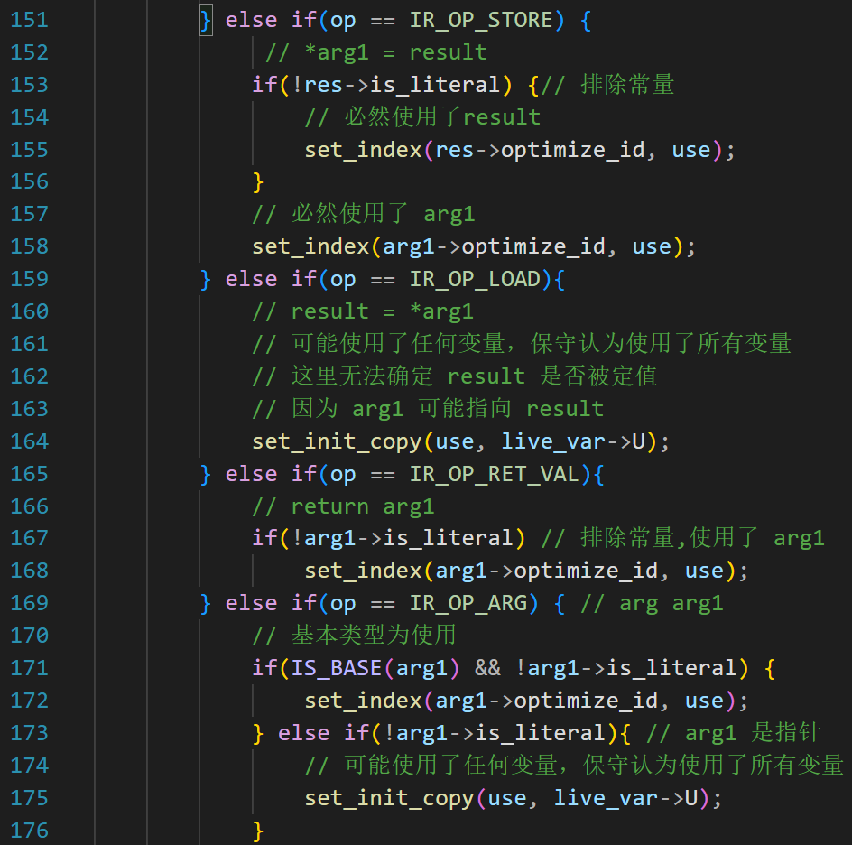
第 151 行，处理形如 *arg1 = res；
如果 res 是变量，肯定使用了 res; 但是不知道 arg1 指向哪里，所以定值了什么变量不好说。
另外，肯定使用了指针变量 arg1，所以有第 158 行。
第 159 行，处理形如 res = *arg1;
同理，不知道 arg1 指向谁，所以认为 use 了所有变量，于是第 164 行设置 use 集合为全集。
第 165 行，处理形如 return arg1;如果返回值是变量，则一定使用了它
第 169 行，处理形如 arg arg1；如果 arg1 是基本类型的变量，则一定使用了它；如果 arg1 是指针变量，保守认为使用了所有变量，设置 use 集合为全集。
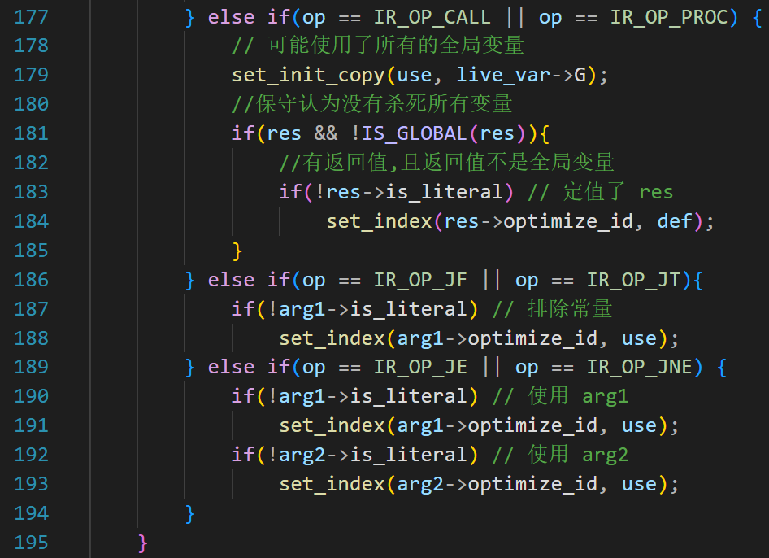
第 177 行，处理函数调用，保守认为使用了所有的全局变量。
如果函数调用有返回值且返回值是局部变量，则定值了 res；如果不是这种情况，定值了哪个变量不好说，就不设置了。
第 186 行，处理为真跳转或者为假跳转，排除掉常量后，必然使用了 arg1；
第 189 行，处理相等跳转或者不相等跳转，排除掉常量后，必然使用了 arg1 或者 arg2；
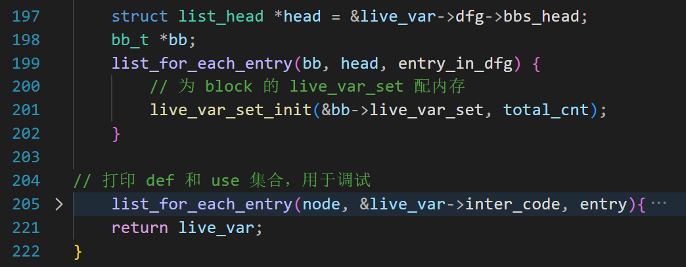
初始化最后部分的代码为每个基本块分配 live_var_set 的内存，并都初始化为空集。
第 205 行是为了调试，不用管。
第 221 行返回设置好的 live_var;
初始化完成了，下面是数据流分析函数。
数据流分析
前文我们模拟了工作表法的流程，所以就不讲解工作表法的代码了。仅讲传统迭代法的代码。
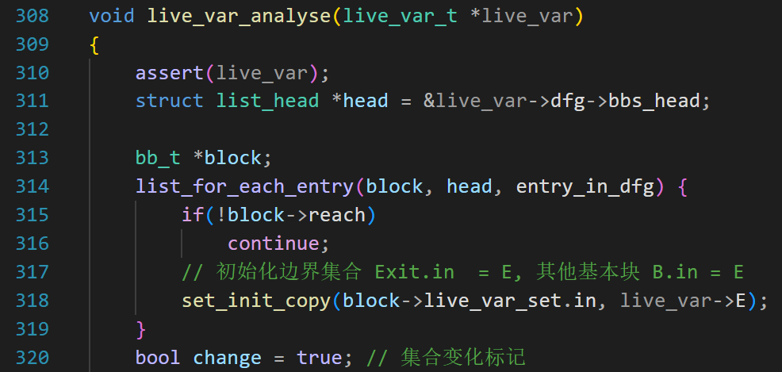
第 314~319 完成基本块的初始化。每个基本块的 in 集合是空集。
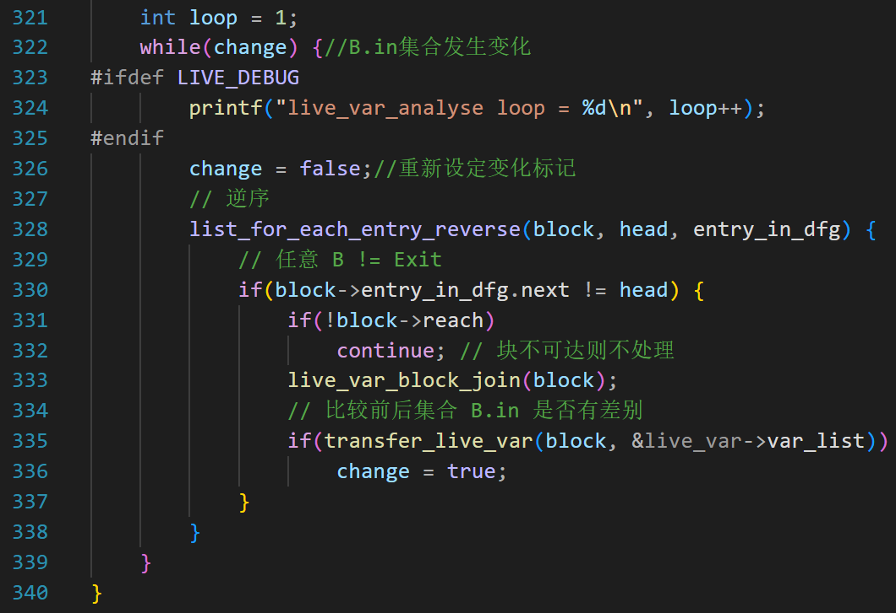
第 328 行，逆序遍历基本块，跳过不可达的块，先计算这个块的后继块 in 集合的并集，作为这个块的 out 值，然后做块内的传递，从 out 得到 in；
如果 in 集合的值和上一次迭代不一样，则设置变量 change 为真，以继续下一轮的迭代。
live_var_block_join 函数代码很简单，不再赘述。
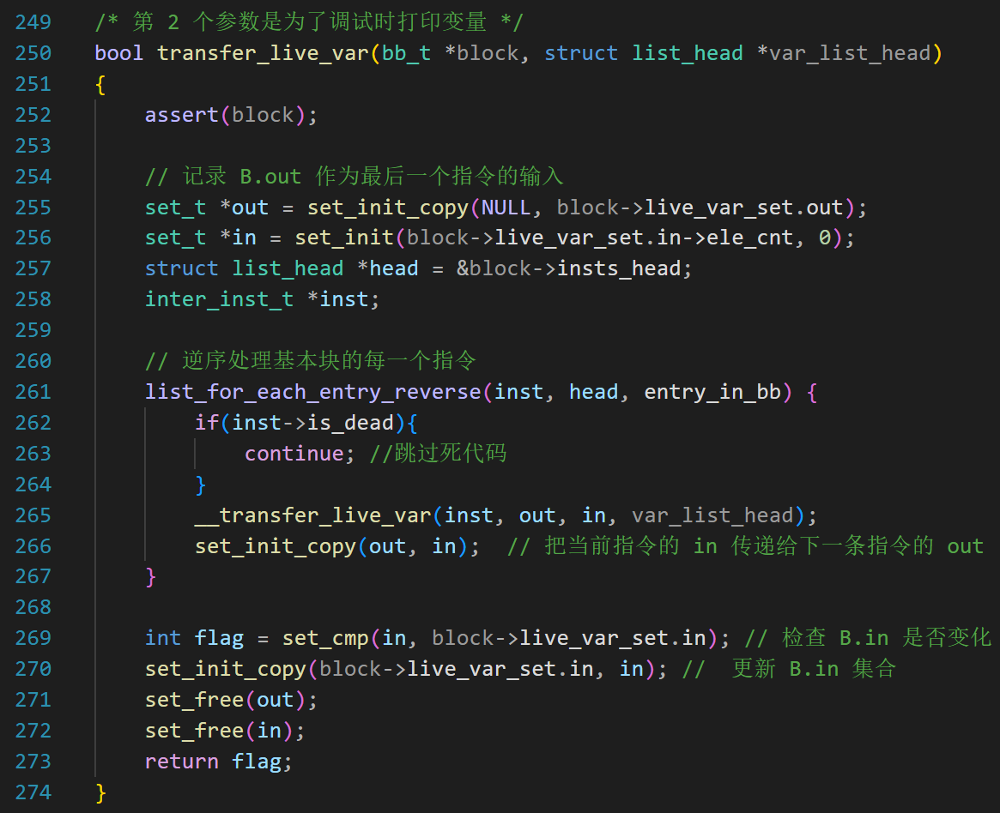
执行这个函数的时候，参数 block 的 out 值已经计算完毕。第 255 行创建 2 个临时的集合，out 和 in；out 和 in 集合分别用来存放指令的输入和输出。
此基本块最后一条指令的 out 就是参数 block 的 out，所以第 255 行用了集合拷贝函数。
第 261 行，逆序处理每个指令，并跳过死代码。
第 265 行做指令级别的传递。
第 269 到结尾都是旧内容，不赘述。
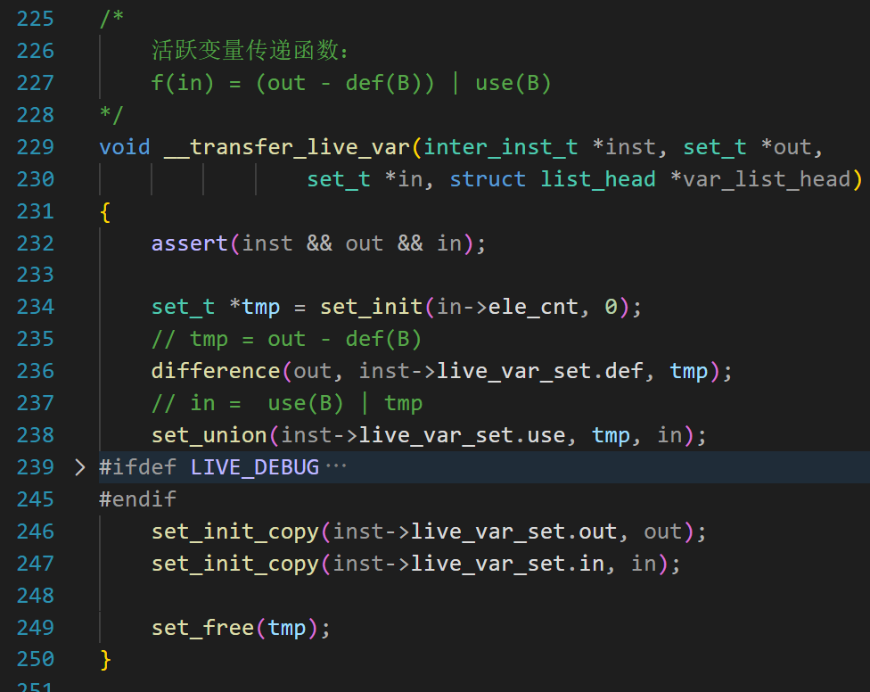
此函数完成了数据流在指令级别的传递。
第 236，求 out 和 def 集合的差集，结果在 tmp 集合中；
第 238，求 tmp 和 use 集合的并集。
第 246~247 的目的是保存 out 和 in 的结果，为后面的优化做准备。
标记死指令
当数据流分析到达不动点的时候，就可以根据指令的 out 集合做优化了。
具体方法是遍历每个指令，如果这个指令的左值不在 out 集合中，就标记此指令是死代码。
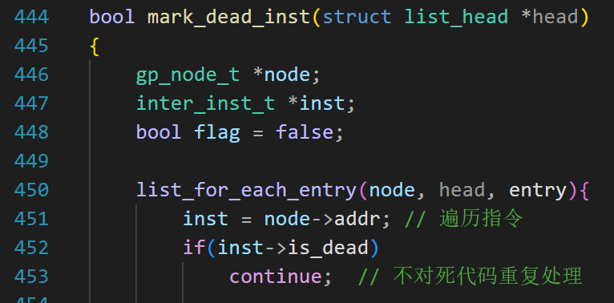
第 450 行，遍历每条指令。
第 452 行是考虑到活跃变量分析可能不止一次，所以之前标记为死代码指令不重复处理。
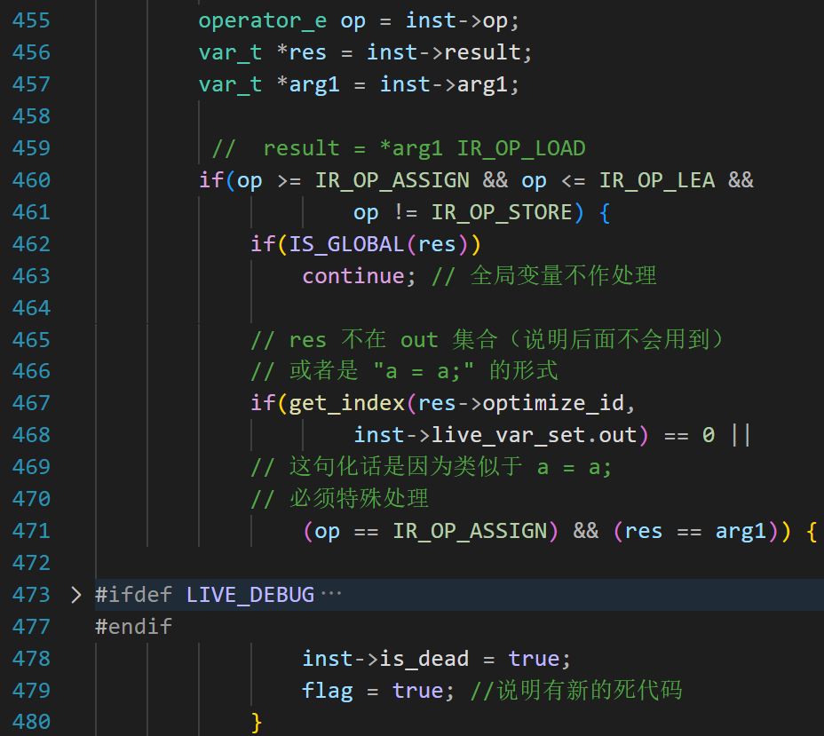
只要操作码牵扯到左值，就是我们处理的对象，但是 IR_OP_STORE 除外。
因为 IR_OP_STORE 的指令形如 *arg1 = res；不确定指针 arg1 指向哪个变量，自然就不知道这个变量是不是在 out 集合里面，所以就不优化了。
第 462~463 是因为全局变量是模块间共享的，保不齐其他文件会引用这个全局变量，所以也不能优化。
第 467，查看 res 是不是在 out 集合中，如果不在，说明此指令多余，第 478 行标记它为死指令。
第 471 行的意思是针对 “a = a;” 这样的代码，活跃变量分析是无法优化掉它的，需要我们特别对待。
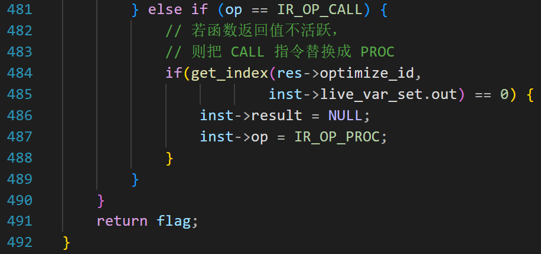
对于有返回值的函数调用，形如 a = foo(); 如果 a 不在 out 集合，那这个返回值也没有用，可以把 IR_OP_CALL 改成 IR_OP_PROC。
再看看之前的图：
可以发现指令 18 和指令 13 是多余的。
因为 .t8 不在指令 18 的out 集合中；.t6 也不在指令 13 的 out 集合中。
当删除了指令 18 和 13 后（把它们标记为死指令），指令 17 和指令 12 也是多余的。
所以，我们需要清除多余的 decl 指令。
1 | |
首先，我给 var_t 增加了第 13 行的 is_live 字段。
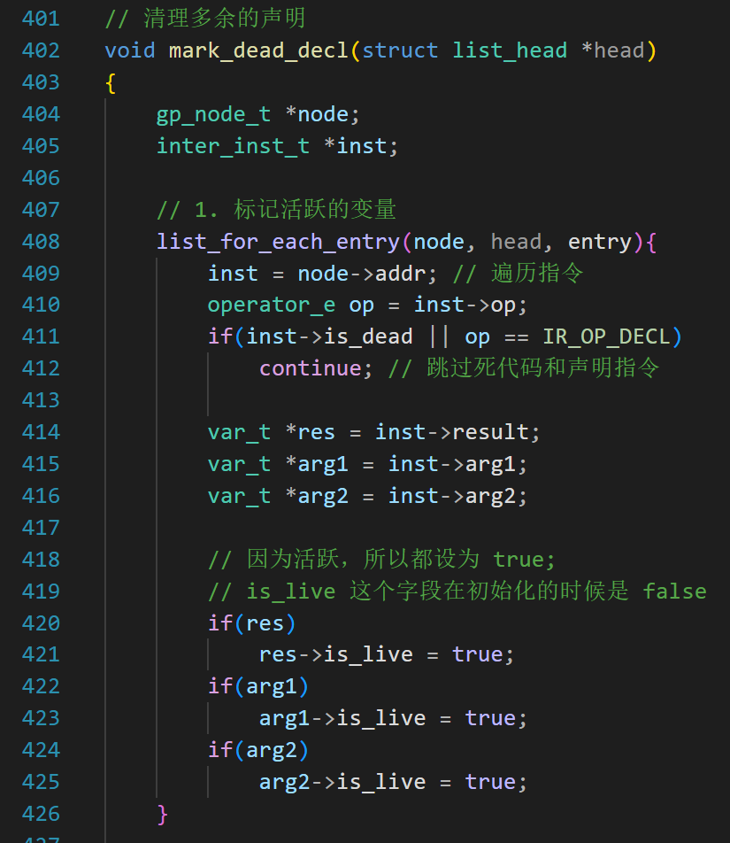
这个函数用于清理多余的 decl 指令。参数是执行完 mark_dead_inst 后的中间代码的链表。
第 408 行，遍历所有的中间指令，跳过死代码和声明语句。
这样得到的指令都是有用的，第 420~425，把指令用到的变量都标记为活跃。
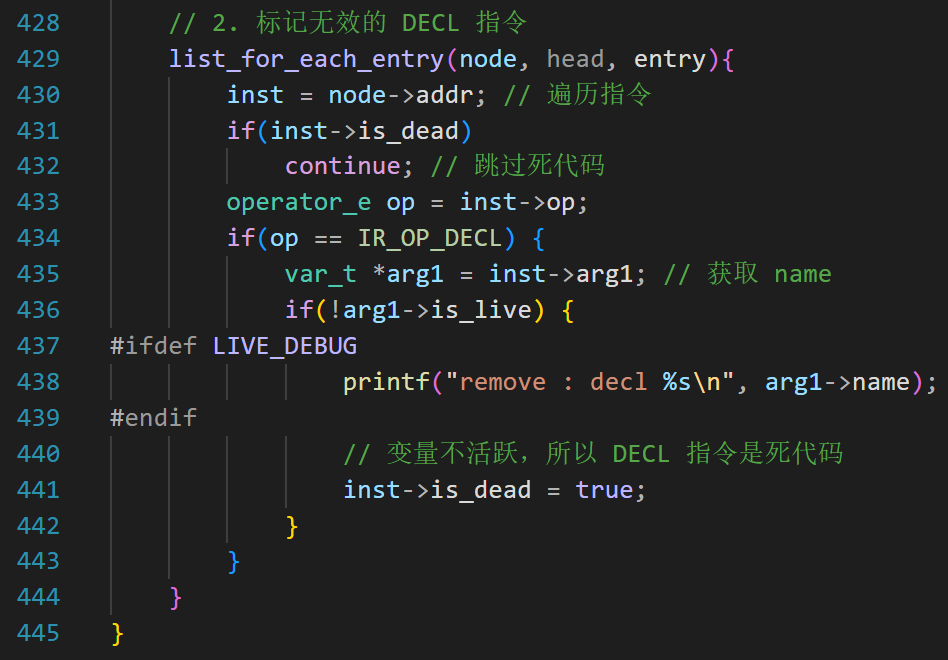
第 429 行，再次遍历所有的指令；第 434 行，仅关注声明语句，如果声明的变量不活跃，则标记此声明为死代码。
控制程序
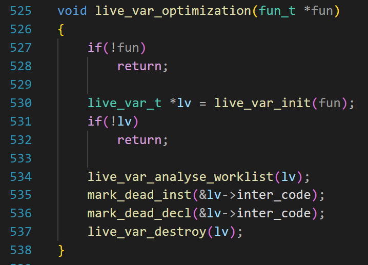
终于来到控制程序。
第 530 行，完成活跃变量分析的初始化。
第 534 行，用工作表法做数据流分析，当然，可以换成传统迭代法。
第 535 行，根据 out 集合判断哪个指令是死指令，并标记。
第 536 行，清理多余的 decl 指令。
乍一看，没有什么问题。
来一张对比图，也看不出什么破绽。
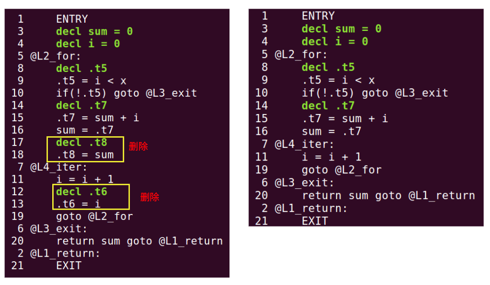
现在把测试代码修改一下：
1 | |
增加了第 8 行，调用函数 bar()，并且把返回值给 c;
相信读者已经看出来了，变量 c 的值没有使用，所以可以把变量 c 优化掉。
优化之前和优化后的中间指令如下图：
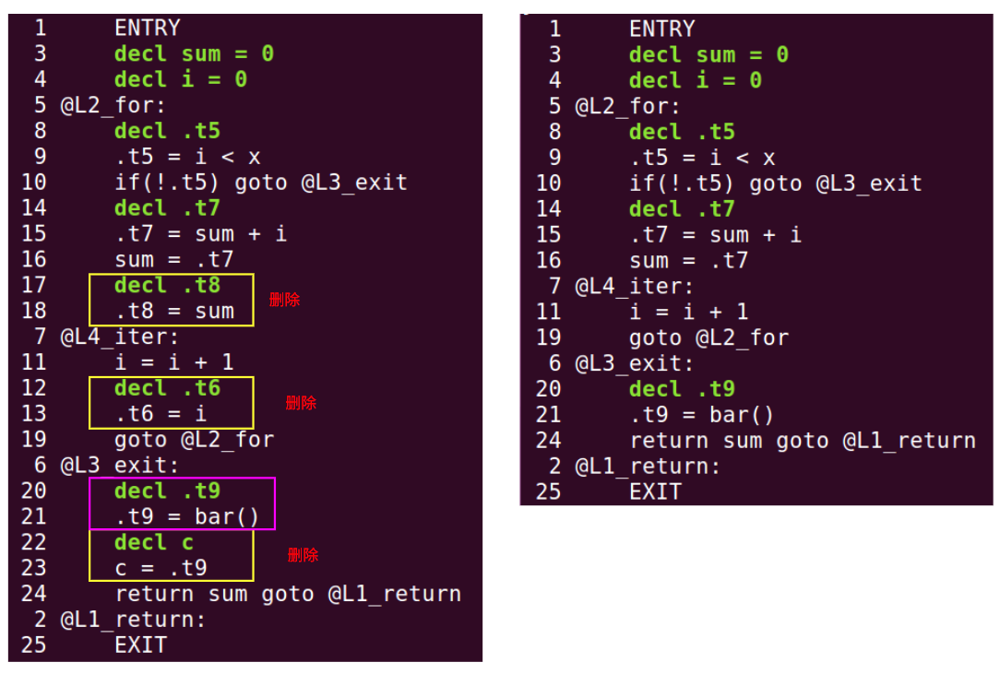
请看最下面的黄框，指令 22 和 23 确实删除了，也就是 c 变量没有了。但是问题来了，粉色框的里面的变量 .t9 也没什么用，为啥没有优化掉呢？
其实，当标记一个指令为死指令的时候，可能会引发连锁反应，本例中，因为 23 是死指令，可以删除；而变量 .t9 唯一被使用的地方是在指令 23 中，现在指令 23 都被删除了，那 .t9 也就没有用了。皮之不存，毛将焉附？
所以，消除死代码后，可能使某些原本活跃的变量变成不活跃的，所以需要再次执行活跃变量分析和优化。
控制程序需要改一改：
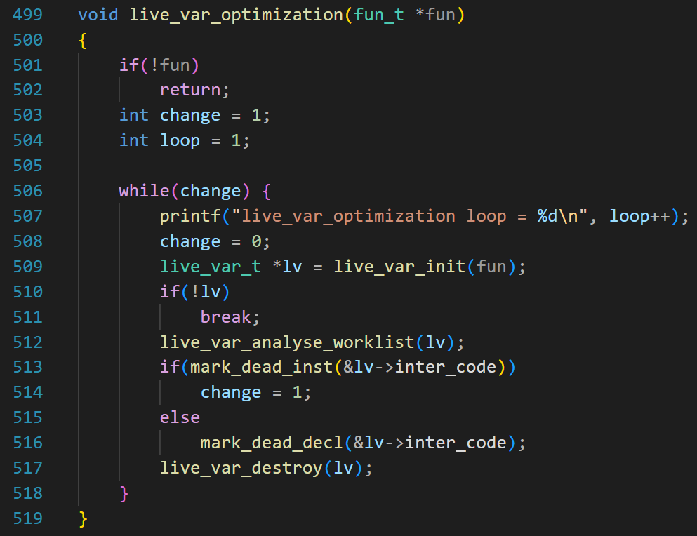
我们增加一个变量 change，进入 while 循环后，第 508 行把它清零，默认仅执行一遍优化。
第 513 行，如果发现新的死代码，mark_dead_inst 函数的返回值是 true;这种情况要设置 change 为 1，以再次执行优化。
否则，说明优化完成，调用 mark_dead_decl 清理没有用的 decl 语句。
修改完控制程序后，再次实验，其实执行了 2 遍优化，结果是：
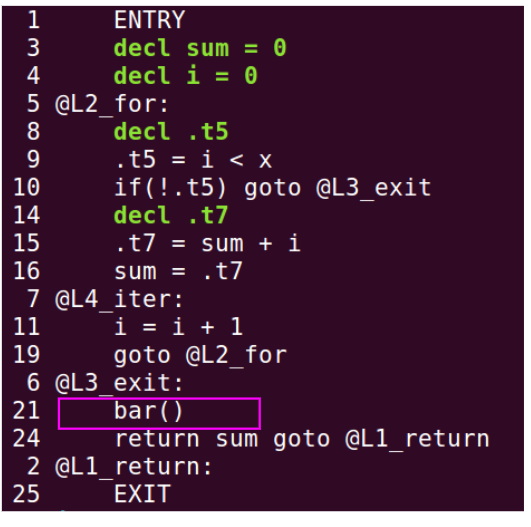
可以看到，之前的指令 20、21 变成了粉色框中的指令 21，达到了目的。
本节的内容就到这里。
下节课我们学习一个特别烧脑的：冗余代码消除。